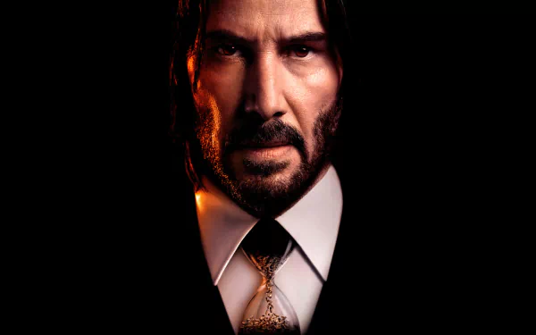

John Wick : Chapter 4
With the price on his head ever increasing,legendary hit man John Wick takes his fight
against the High Table global as he seeks out the most powerful players in the
underworld, from New York to Paris to Japan to Berlin.

Avatar The Way of Water
Jake Sully and Ney'tiri have formed a family and are doing everything to stay together.
However, they must leave their home and explore the regions of Pandora. When
an ancient threat resurfaces, Jake must fight a difficult war against the humans.

The Fast and the Furious: Tokyo Drift
The Fast and the Furious: Tokyo Drift is a 2006 action film directed by Justin Lin and written by Chris Morgan. It is the standalone sequel to The Fast and the Furious (2001) and 2 Fast 2 Furious (2003) and is the third main installment in the Fast & Furious franchise. It stars Lucas Black and Bow Wow. In the film, car enthusiast Sean Boswell (Black) is sent to live in Tokyo with his estranged father and finds solace exploring the city's drifting community.